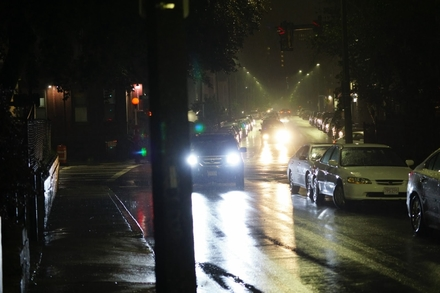
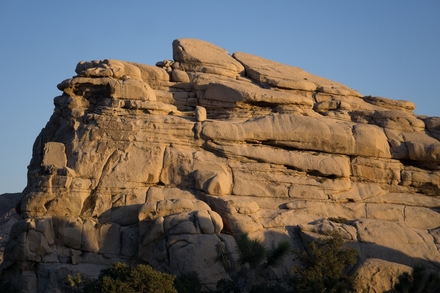

Calculated Judgement through Machine Eyes
Building off of the work from my computational ethics research
paper, this blog post details a fictious scenario in the future in
which an autonomous vehicle crashes. Through this story, we explore
what kinds of data may weigh into a moral calculation using
the results of MIT's Moral Machine experiment. Additionally, Leben's
Ralwsian algorithm for autonomous vehicles is discussed as an
example of how computers could make ethical decisions.

Where is the mountain, William Shatner?
Fuelled by the spirit of William Shatner's romantic outlook on
Yosemite National Park, this blog post investiages the best areas
in the United States for outdoor rock climbing. This project
features geographic heatmaps created using the data from my
Mountain project web scraper.